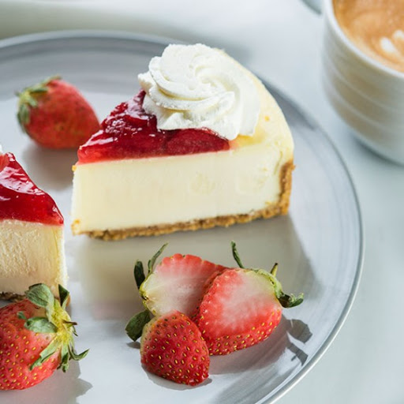

PAY DE QUESO
INGREDIENTES
1/2 paquete de galletas Maria molidas
1 barra de manteqilla
1 paquete de queso crema
5 huevos
1 lechera
1 cucharadita de esencia de vainilla
1/2 taza de crema espesa
PROCEDIMIENTO
- En un recipiente coloca las galletas marias con la barra de mantequilla y mezcla
hasta formar una pasta suave. Colòcala en tu molde para pay y espàrcela con
tus dedos hasta que el fondo y bordes de este queden completamente cubiertos
- En el mismo recipiente donde creaste la base (puede ser otro si asi lo prefieres),
coloca el queso crema, los huevos, la lechera, la vainilla y la crema, y con la
batidora mezcla hasta que todo se integre.
- Vacia sobre la base de galleta y coloca el recipiente en el horno a 180º por 45
minutos, aproximadamente. Una vez transcurrido el tiempo retira del horno,
espera a que se enfrie un poco y sirve.
